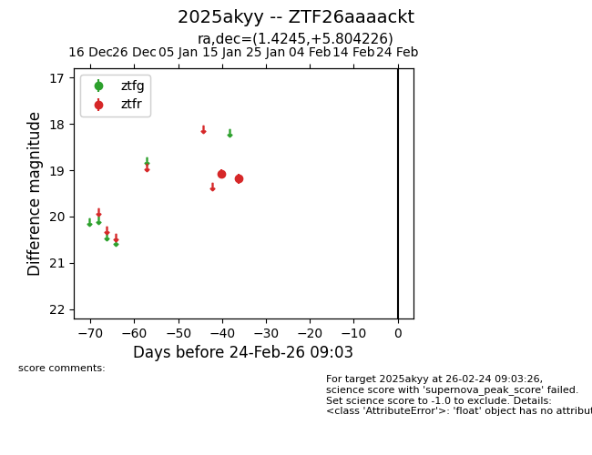
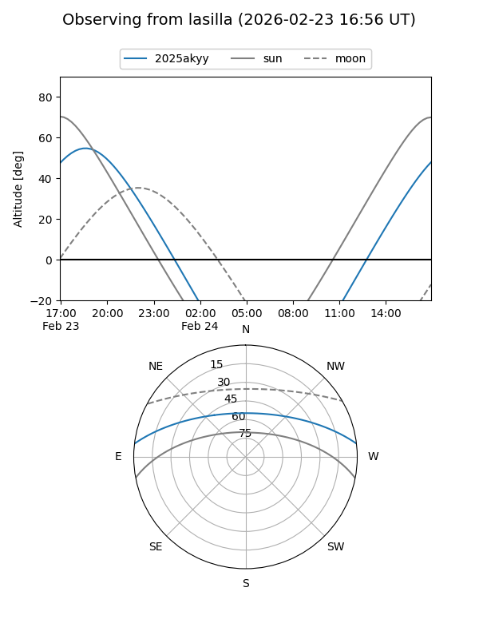
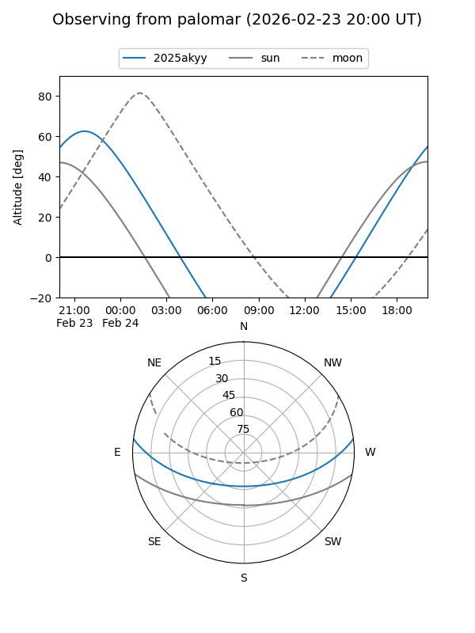

2025akyy
Target 2025akyy at 2026-01-17 08:45
Aliases and brokers:
FINK: link
Lasair: link
ALeRCE: link
TNS: link
YSE: link
alt names
ZTF26aaaackt (ztf,fink_ztf)
2025akyy (tns,yse)
Coordinates:
equatorial (ra, dec) = 1.4245,+5.80423
equatorial (HMS+DMS) = 00:05:41.87,+05:48:15.21
galactic (l, b) = (102.6820,-55.25898)
Flags:
Photometry:
last ztfr=19.07
1 ztfr detections
Lightcurve

Visibility


Additional plots